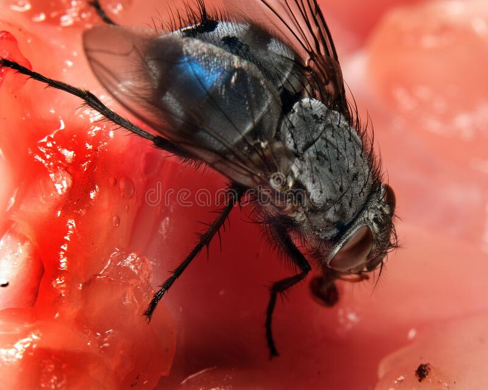
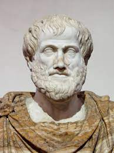
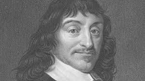
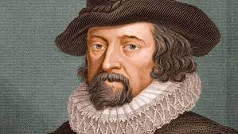
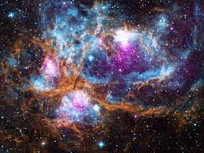
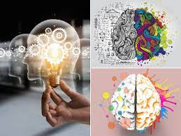

La sempiterna necesidad del hombre por conocer su origen lo ha llevado, a lo largo de la historia, a experimentar e investigar las posibles causas que generaron vida en este planeta. Las teorías que tratan de explicarlo han sido muchas y muy variadas, desde las que afirman que todo lo hizo el Creador en siete días -con descanso incluido- hasta las que señalan que toda materia, por sí misma, puede producir seres vivos: la Teoría de la Generación Espontánea, pionera en las hipótesis esclarecedoras del inicio de la existencia.
A esa supuesta producción de materia viva a partir de materia inerte se le llama abiogénesis y es el principio «científico» que guía la teoría de la generación espontánea, surgida a partir del descubrimiento de la aparentemente inexplicable aparición de moscas en la carne podrida, de cochinillas en los lugares húmedos o de gusanos en el lodo.
A continuación, usted conocerá todo con respecto a esta teoría, que aunque hoy nos parezca un tema que roza con la comedia, en el XV y XVI era la teoría más aceptada mundialmente.

¿QUÉ ES LA TEORÍA DE LA GENERACIÓN ESPONTÁNEA?
La Teoría de la generación espontánea fue el nombre que recibió la creencia de que ciertas formas de vida animal y vegetal surgían de manera automática, espontánea, a partir de la materia orgánica, la materia inorgánica o alguna combinación de ambas. Esta teoría también recibe el nombre de abiogénesis.
Esta teoría estuvo vigente por muchos siglos, desde la Antigüedad. Aunque es una hipótesis que jamás pudo probarse científicamente, muchos creyeron comprobarla mediante la observación directa.
Aristóteles, el filósofo griego, creía en esta teoría. También fue aceptada y sustentada por pensadores del siglo XVII y XVIII como Sir Francis Bacon, René Descartes e Isaac Newton, quienes desconocían el mundo de la microbiología. Aplicaba a las criaturas pequeñas tenidas por plagas o parásitos, como moscas, piojos, garrapatas e incluso ratones.



La creencia era que si se dejaban en un recipiente los elementos correctos (digamos: ropa interior sudada y trigo), se encontraría al cabo de cierto tiempo en su lugar algún tipo de animales (digamos: ratones).
Fue famoso el experimento desarrollado por Jan Baptiste van Helmond. Este guardó su ropa mezclada con trigo en un recipiente abierto. Al cabo de 21 días, tras un proceso de transformación, nacieron ratones en la ropa. De allí van Helmond y su generación creyeron haber confirmado el principio de generación espontánea.
Esta teoría sobre el origen de la vida no contradecía la reproducción convencional, ya que las criaturas obtenidas por generación espontánea eran tan perfectas e idénticas como las nacidas de la reproducción sexual.
De este modo, podía sustentarse que en la carne descompuesta, los excrementos o las mismas entrañas del ser humano, se daban por generación espontánea diversas formas de vida, en vez de pensar que de algún modo habían éstas llegado hasta allí.
REFUTACIÓN DE LA TEORÍA.
La Teoría de la generación espontánea se refutó a través de tres experimentos específicos:
- El experimento de Redi (1668). Llevado a cabo por Francesco Redi, médico italiano, quien dudaba de que los insectos pudieran surgir espontáneamente de la putrefacción, y suponía que en algún momento algún insecto adulto debía depositar huevos o larvas sobre la materia en descomposición. Para comprobarlo ubicó tres trozos de carne en tres envases distintos: uno de ellos abierto y los otros dos sellados con gasas que permitieran el ingreso del aire al frasco pero no de las moscas adultas. Tras pasar el tiempo, hubo gusanos en la carne expuesta y no en las selladas, aunque sí hallaron huevos de mosca sobre las gasas.
Video alusivo al experimento de Francesco Redi.
- El experimento de Spallanzani (1769). Desarrollado posteriormente por el sacerdote católico y naturalista Lázaro Spallanzani, fue una suerte de preludio a la pasteurización. El italiano depositó caldo de carne en dos envases, luego de haberlos calentado a una temperatura que matara a los microorganismos existentes y de haberla sellado herméticamente en el envase. Así demostró que los microorganismos no nacen espontáneamente de la materia, sino que provienen de otros microorganismos.
Video alusivo al experimento de Lázaro Spallanzani.
- El experimento de Pasteur (1861). Desarrollado por el francés Louis Pasteur, padre de la técnica de preservación de alimentos conocida como la pasteurización, consistió en la introducción de caldo de carne en dos balones de destilación de boca larga y encorvada (en forma de “S), que se va haciendo más fina conforme asciende. La forma del tubo permitía la entrada de aire, pero hacía que los microorganismos se quedaran en la parte inferior del envase, sin acceder a la carne. Así, calentó el caldo hasta esterilizarlo y simplemente esperó: tras varios días, no hubo señales de descomposición, tras lo cual Pasteur procedió a cortar la boca del envase y allí, al poco tiempo, sí se dio la descomposición, demostrando así que los microorganismos provenían de otros microorganismos y que, en general, toda forma de vida proviene de otra forma de vida que le antecede.
Video alusivo al experimento de Louis Pasteur.
Nueva revolución en las teorías científicas sobre el origen de la consciencia.
Se consolidan nuevas relaciones internacionales.

Científicos de México y varias partes del mundo exploran las nuevas teorías sobre el comportamiento del cosmos y cómo los nuevos datos permiten o no su comprobación.
Nueva revolución en las teorías científicas sobre el origen de la consciencia.
Consideran que ITT puede servir como punto de partida para futuras investigaciones formales.

Kleiner y Tull consideran la ITT (Teoría de la Información Integrada) como uno de los principales modelos de la consciencia: describe tanto la calidad como la cantidad de la experiencia consciente de un sistema físico, como el cerebro, en un estado particular.
Científicos del TEC descubren nueva bacteria luego de tres años de recolección de muestras e investigación.
Se descubrió a partir de agua colectada de un drenaje industrial en la provincia de Alajuela.
“Listeria costaricensis”, así se llamará oficialmente la nueva especie de bacteria identificada por los científicos del Centro de Investigación en Biotecnología del Tecnológico de Costa Rica (TEC), Johnny Peraza y Kattia Núñez, en colaboración con científicos del Instituto Pasteur, con sede en París, Francia. Listeria es un grupo de bacterias compuesto por 18 especies, dos de ellas son patógenas (causan graves daños al ser humano y animales) y se adquieren tras consumir alimentos contaminados.